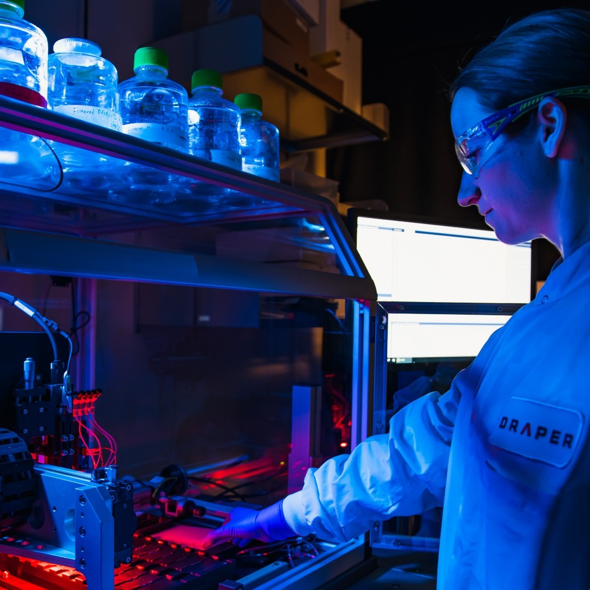
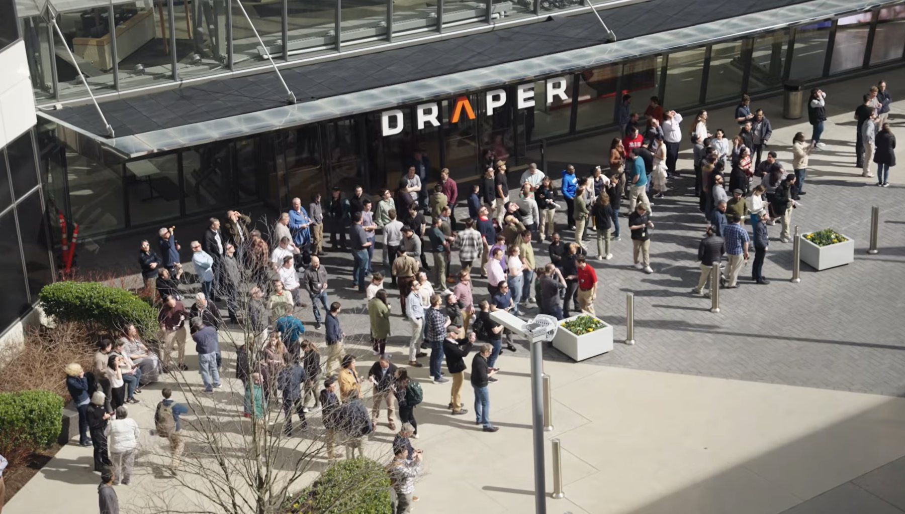
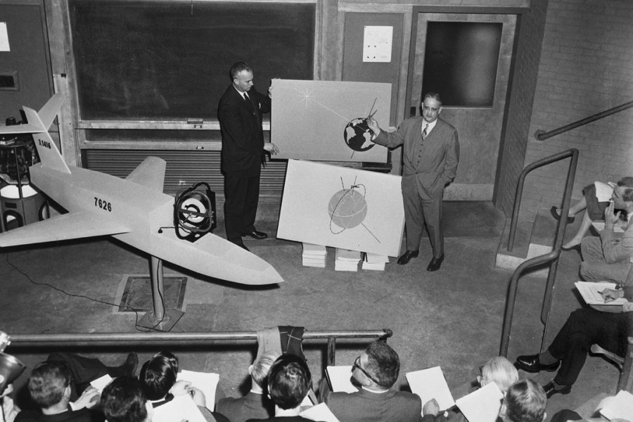

Independent. Nonprofit. Accountable to the problem, not to shareholders.
The hardest problems don't fit in one discipline.
Draper designs, develops, and deploys advanced solutions across biotechnology, electronics, strategic systems, and space — carrying work from first concept to a prototype that survives the field.

The work is the argument.
Four market areas, one company. Nothing on this site claims a capability without something we built attached to it.
Biotechnology Systems
Engineering applied to human biology — from microphysiological platforms to medical devices and biodefense.
Recent work Microphysiological systemsElectronic Systems
Microelectronics, sensing, and secure processing built small enough and rugged enough to deploy.
Recent work Miniaturized inertial measurementStrategic Systems
Guidance, navigation, and control for missions where there is no second attempt.
Recent work Navigation without GPSSpace Systems
Autonomy and precision navigation for spacecraft, landers, and long-duration missions.
Recent work Lunar descent and landingPublished, cited, and open to read.
Peer-reviewed papers, patents, and technical reports from Draper engineers and scientists — searchable in one place for the first time.
Bring us a problem you can't stop thinking about.
Engineers, scientists, and students work side by side here. Draper Scholars pursue graduate degrees while working on funded research, and no one spends a career on a single program.
Independence is the product.
Draper is a nonprofit. We hold no product line to protect and answer to no shareholders, which means our technical recommendation is the one we actually believe — including when it is that the work shouldn't proceed.
That structure is why government, academic, and commercial partners bring us problems they can't hand to a vendor with something to sell.
How Draper is structured

The guidance system that flew Apollo was designed here.
Draper began as an instrumentation laboratory at MIT and became an independent nonprofit in 1973. The problem it was founded on — knowing where you are when nothing outside can tell you — is the same one its engineers work on today, in vehicles that hadn't been imagined then.
That continuity is the point. Programs that take fifteen years to reach the field need an institution built to still be here.
The Draper Museum
Flight hardware, guidance computers, and archive holdings from six decades of the work, open to visitors at 555 Technology Square.
Plan a visit